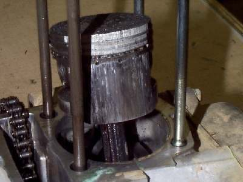
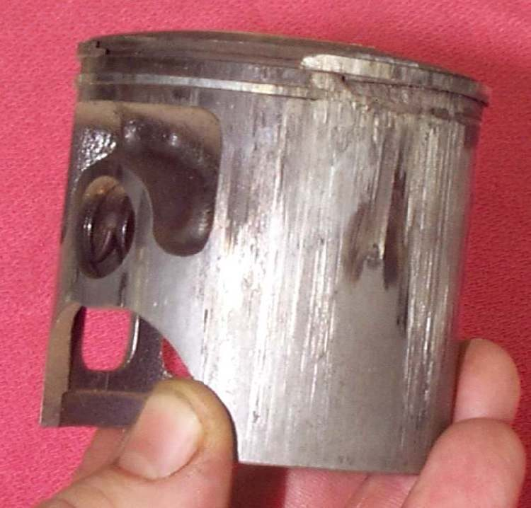

A seized engine is one where the piston has welded itself to the cylinder wall from heat and lack of oil, or a bearing has locked. While riding, the engine suddenly loses power, may squeal, and the rear wheel can lock. After stopping, the kickstart or starter will not turn the engine. The K-Light manual lists no or low oil pressure and blocked oil passages as causes of seizure. On two-strokes, an empty oil tank, a failed oil pump or a lean mixture are the usual causes.
Is it safe to ride?
No. If it happens while riding, pull the clutch lever in at once (or let the scooter coast), steer to the side and stop. Pulling the clutch stops the rear wheel locking.
Quick checks first
- Pull the clutch in and get off the road safely before anything else.
- Did the engine overheat, lose power or squeal first?
- Oil level (four-stroke) or oil tank level (two-stroke)?
- Is it the engine that is locked, or the gearbox, chain or rear brake?
- On a two-stroke, long steady running at one throttle setting can seize it even when it is not pushed hard. See Two-stroke seizes after long steady running.
- A new or rebuilt engine run hard before it is broken in can also seize: Break in a new or rebuilt engine.
Diagnose it step by step
1In neutral, can you push the bike freely?
- No, the rear wheel is locked even in neutral: the problem is the wheel, brake or chain. See Brake drags and the wheel does not spin freely or Chain has snapped.
- Yes: go to step 2.
2Let the engine cool for at least an hour. Remove the spark plug. In top gear, rock the rear wheel gently. Does the engine turn at all?
- Yes, it turns after cooling: the piston "nipped" (partly seized) and freed as it cooled. Go to step 3.
- No: go to step 5.
3Check the oil level (Check the engine oil level) or the two-stroke oil tank. Was it low or empty?
- Yes: refill. On a two-stroke, also do Check the two-stroke oil pump and lines. Go to step 4.
- No: suspect overheating or lean running. See Air-cooled engine overheats or Liquid-cooled engine overheats. Go to step 4.
4Do Test engine compression. Is it within the manual range?
- Yes: the damage may be light. Ride very gently on a short test only after the cause is fixed. Recheck compression after 100 km.
- No: the piston and cylinder are scored. Go to Assess the top end (cylinder, piston, valves).
5Engine still locked solid when cold.
- Do not force it with the starter, a long lever or bump starting. You can break the crank or the starter clutch.
- Ask the workshop for Assess the top end (cylinder, piston, valves) first, then Assess bottom end and internal engine damage if the piston is free and the crank is still locked.
6Is the kickstart jammed but the engine turns by the wheel?
- Yes: the fault is in the kickstart, not the engine: Kickstarter will not move or does not spring back.
Causes, most likely first
| Cause | How to confirm | Fix |
|---|---|---|
| Low or no engine oil | Dipstick empty, oil light | Assess the top end (cylinder, piston, valves) |
| Two-stroke oil not delivered | Tank level unchanged | Check the two-stroke oil pump and lines |
| Overheating, lean mixture | White plug, blocked fins or low coolant | Check air cooling (fins, airflow, mixture) |
| Bearing seizure | Crank locked with piston free | Assess bottom end and internal engine damage |
| Hard riding on a new rebuild | Seized soon after rebuild | Assess the top end (cylinder, piston, valves) |
| Overheated cylinder and melted piston | Smeared aluminium on the bore, blued or discoloured wall | Workshop: new cylinder or liner, and check the head for flatness |
| Long steady throttle on a two-stroke | Piston scored or melted over the exhaust port after a steady-speed ride | Rebuild the top end; vary the throttle in future |